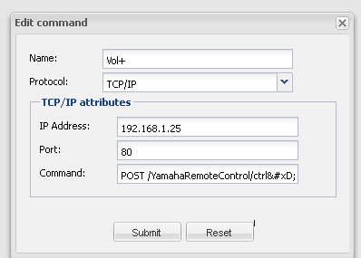
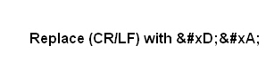

!2!
Controlling RX 2065 Yamaha Amp with OpenRemote
You can control Yamaha's range of amps directly using OpenRemote using TCPIP
on Port 80
Below are a list of the commands once you Have created the Controller File you will have to edit it by replacing (CR/LF) with (please see atached Image)this is necessary since OpenRemote wont
render these commands correctly in Dersigner
Power On:
POST /YamahaRemoteControl/ctrl(CR/LF)Content-Type: text/plain(CR/LF)Content-length: 142(CR/LF)Host: 10.0.0.1(CR/LF)(CR/LF)<?xml version="1.0" encoding="utf-8"?><YAMAHA_AV cmd="PUT"><Main_Zone><Power_Control><Power>On</Power></Power_Control></Main_Zone></YAMAHA_AV>
--------------------------------------
Power Stand By:
POST /YamahaRemoteControl/ctrl(CR/LF)Content-Type: text/plain(CR/LF)Content-length: 147(CR/LF)Host: 10.0.0.1(CR/LF)(CR/LF)<?xml version="1.0" encoding="utf-8"?><YAMAHA_AV cmd="PUT"><Main_Zone><Power_Control><Power>Standby</Power></Power_Control></Main_Zone></YAMAHA_AV>
--------------------------------------
vol up:
POST /YamahaRemoteControl/ctrl(CR/LF)Content-Type: text/plain(CR/LF)Content-length: 126(CR/LF)Host: 10.0.0.1(CR/LF)(CR/LF)<?xml version="1.0" encoding="utf-8"?><YAMAHA_AV cmd="PUT"><Main_Zone><Vol><Up_Down>Up</Up_Down></Vol></Main_Zone></YAMAHA_AV>
-------------------------
vol Down:
POST /YamahaRemoteControl/ctrl(CR/LF)Content-Type: text/plain(CR/LF)Content-length: 128(CR/LF)Host: 10.0.0.1(CR/LF)(CR/LF)<?xml version="1.0" encoding="utf-8"?><YAMAHA_AV cmd="PUT"><Main_Zone><Vol><Up_Down>Down</Up_Down></Vol></Main_Zone></YAMAHA_AV>
----------------------------------
Mute Off:
POST /YamahaRemoteControl/ctrl(CR/LF)Content-Type: text/plain(CR/LF)Content-length: 121(CR/LF)Host: 10.0.0.1(CR/LF)(CR/LF)<?xml version="1.0" encoding="utf-8"?><YAMAHA_AV cmd="PUT"><Main_Zone><Vol><Mute>Off</Mute></Vol></Main_Zone></YAMAHA_AV>
------------------------------------
Mute On:
POST /YamahaRemoteControl/ctrl(CR/LF)Content-Type: text/plain(CR/LF)Content-length: 120(CR/LF)Host: 10.0.0.1(CR/LF)(CR/LF)<?xml version="1.0" encoding="utf-8"?><YAMAHA_AV cmd="PUT"><Main_Zone><Vol><Mute>On</Mute></Vol></Main_Zone></YAMAHA_AV>
------------------------------------------------
Imput HDMI 1:
POST /YamahaRemoteControl/ctrl(CR/LF)Content-Type: text/plain(CR/LF)Content-length: 137(CR/LF)Host: 10.0.0.1(CR/LF)(CR/LF)<?xml version="1.0" encoding="utf-8"?><YAMAHA_AV cmd="PUT"><Main_Zone><Input><Input_Sel>HDMI1</Input_Sel></Input></Main_Zone></YAMAHA_AV>
--------------------------------------
Imput HDMI 2:
POST /YamahaRemoteControl/ctrl(CR/LF)Content-Type: text/plain(CR/LF)Content-length: 137(CR/LF)Host: 10.0.0.1(CR/LF)(CR/LF)<?xml version="1.0" encoding="utf-8"?><YAMAHA_AV cmd="PUT"><Main_Zone><Input><Input_Sel>HDMI2</Input_Sel></Input></Main_Zone></YAMAHA_AV>
---------------------------------------------
Imput HDMI 3:
POST /YamahaRemoteControl/ctrl(CR/LF)Content-Type: text/plain(CR/LF)Content-length: 137(CR/LF)Host: 10.0.0.1(CR/LF)(CR/LF)<?xml version="1.0" encoding="utf-8"?><YAMAHA_AV cmd="PUT"><Main_Zone><Input><Input_Sel>HDMI3</Input_Sel></Input></Main_Zone></YAMAHA_AV>
--------------------------------------
Imput HDMI 4:
POST /YamahaRemoteControl/ctrl(CR/LF)Content-Type: text/plain(CR/LF)Content-length: 137(CR/LF)Host: 10.0.0.1(CR/LF)(CR/LF)<?xml version="1.0" encoding="utf-8"?><YAMAHA_AV cmd="PUT"><Main_Zone><Input><Input_Sel>HDMI4</Input_Sel></Input></Main_Zone></YAMAHA_AV>
---------------------------
Imput AV1:
POST /YamahaRemoteControl/ctrl(CR/LF)Content-Type: text/plain(CR/LF)Content-length: 135(CR/LF)Host: 10.0.0.1(CR/LF)(CR/LF)<?xml version="1.0" encoding="utf-8"?><YAMAHA_AV cmd="PUT"><Main_Zone><Input><Input_Sel>AV1</Input_Sel></Input></Main_Zone></YAMAHA_AV>
-----------------------------------
vol to -30.0:
POST /YamahaRemoteControl/ctrl(CR/LF)Content-Type: text/plain(CR/LF)Content-length: 158(CR/LF)Host: 10.0.0.1(CR/LF)(CR/LF)<?xml version="1.0" encoding="utf-8"?><YAMAHA_AV cmd="PUT"><Main_Zone><Vol><Lvl><Val>-300</Val><Exp>1</Exp><Unit>dB</Unit></Lvl></Vol></Main_Zone></YAMAHA_AV>
--------------------------
main zone get basic status:
POST /YamahaRemoteControl/ctrl(CR/LF)Content-Type: text/plain(CR/LF)Content-length: 131(CR/LF)Host: 10.0.0.1(CR/LF)(CR/LF)<?xml version="1.0" encoding="utf-8"?><YAMAHA_AV cmd="GET"><Main_Zone><Basic_Status>GetParam</Basic_Status></Main_Zone></YAMAHA_AV>
-------------------------
Music Video
POST /YamahaRemoteControl/ctrl(CR/LF)Content-Type: text/plain(CR/LF)Content-length: 137(CR/LF)Host: 10.0.0.1(CR/LF)(CR/LF)<?xml version="1.0" encoding="utf-8"?><YAMAHA_AV cmd="PUT"><Main_Zone><Surr><Pgm_Sel>Music Video</Pgm_Sel></Surr></Main_Zone></YAMAHA_AV>
-------------------------
The Bottom Line
POST /YamahaRemoteControl/ctrl(CR/LF)Content-Type: text/plain(CR/LF)Content-length: 141(CR/LF)Host: 10.0.0.1(CR/LF)(CR/LF)<?xml version="1.0" encoding="utf-8"?><YAMAHA_AV cmd="PUT"><Main_Zone><Surr><Pgm_Sel>The Bottom Line</Pgm_Sel></Surr></Main_Zone></YAMAHA_AV>
-------------------------
The Roxy Theater
POST /YamahaRemoteControl/ctrl(CR/LF)Content-Type: text/plain(CR/LF)Content-length: 142(CR/LF)Host: 10.0.0.1(CR/LF)(CR/LF)<?xml version="1.0" encoding="utf-8"?><YAMAHA_AV cmd="PUT"><Main_Zone><Surr><Pgm_Sel>The Roxy Theater</Pgm_Sel></Surr></Main_Zone></YAMAHA_AV>
-------------------------
Cellar Club
POST /YamahaRemoteControl/ctrl(CR/LF)Content-Type: text/plain(CR/LF)Content-length: 137(CR/LF)Host: 10.0.0.1(CR/LF)(CR/LF)<?xml version="1.0" encoding="utf-8"?><YAMAHA_AV cmd="PUT"><Main_Zone><Surr><Pgm_Sel>Cellar Club</Pgm_Sel></Surr></Main_Zone></YAMAHA_AV>
-----------------------------------
Chamber
POST /YamahaRemoteControl/ctrl(CR/LF)Content-Type: text/plain(CR/LF)Content-length: 133(CR/LF)Host: 10.0.0.1(CR/LF)(CR/LF)<?xml version="1.0" encoding="utf-8"?><YAMAHA_AV cmd="PUT"><Main_Zone><Surr><Pgm_Sel>Chamber</Pgm_Sel></Surr></Main_Zone></YAMAHA_AV>
--------------------------
Hall in Vienna
POST /YamahaRemoteControl/ctrl(CR/LF)Content-Type: text/plain(CR/LF)Content-length: 140(CR/LF)Host: 10.0.0.1(CR/LF)(CR/LF)<?xml version="1.0" encoding="utf-8"?><YAMAHA_AV cmd="PUT"><Main_Zone><Surr><Pgm_Sel>Hall in Vienna</Pgm_Sel></Surr></Main_Zone></YAMAHA_AV>
--------------------------
Hall in Munich
POST /YamahaRemoteControl/ctrl(CR/LF)Content-Type: text/plain(CR/LF)Content-length: 140(CR/LF)Host: 10.0.0.1(CR/LF)(CR/LF)<?xml version="1.0" encoding="utf-8"?><YAMAHA_AV cmd="PUT"><Main_Zone><Surr><Pgm_Sel>Hall in Munich</Pgm_Sel></Surr></Main_Zone></YAMAHA_AV>
--------------------------------
Roleplaying Game
POST /YamahaRemoteControl/ctrl(CR/LF)Content-Type: text/plain(CR/LF)Content-length: 142(CR/LF)Host: 10.0.0.1(CR/LF)(CR/LF)<?xml version="1.0" encoding="utf-8"?><YAMAHA_AV cmd="PUT"><Main_Zone><Surr><Pgm_Sel>Roleplaying Game</Pgm_Sel></Surr></Main_Zone></YAMAHA_AV>
---------------------------------
Action Game
POST /YamahaRemoteControl/ctrl(CR/LF)Content-Type: text/plain(CR/LF)Content-length: 137(CR/LF)Host: 10.0.0.1(CR/LF)(CR/LF)<?xml version="1.0" encoding="utf-8"?><YAMAHA_AV cmd="PUT"><Main_Zone><Surr><Pgm_Sel>Action Game</Pgm_Sel></Surr></Main_Zone></YAMAHA_AV>
--------------------------------------
Sports
POST /YamahaRemoteControl/ctrl(CR/LF)Content-Type: text/plain(CR/LF)Content-length: 132(CR/LF)Host: 10.0.0.1(CR/LF)(CR/LF)<?xml version="1.0" encoding="utf-8"?><YAMAHA_AV cmd="PUT"><Main_Zone><Surr><Pgm_Sel>Sports</Pgm_Sel></Surr></Main_Zone></YAMAHA_AV>
------------------------
Mono Movie
POST /YamahaRemoteControl/ctrl(CR/LF)Content-Type: text/plain(CR/LF)Content-length: 136(CR/LF)Host: 10.0.0.1(CR/LF)(CR/LF)<?xml version="1.0" encoding="utf-8"?><YAMAHA_AV cmd="PUT"><Main_Zone><Surr><Pgm_Sel>Mono Movie</Pgm_Sel></Surr></Main_Zone></YAMAHA_AV>
---------------------------
Drama
POST /YamahaRemoteControl/ctrl(CR/LF)Content-Type: text/plain(CR/LF)Content-length: 131(CR/LF)Host: 10.0.0.1(CR/LF)(CR/LF)<?xml version="1.0" encoding="utf-8"?><YAMAHA_AV cmd="PUT"><Main_Zone><Surr><Pgm_Sel>Drama</Pgm_Sel></Surr></Main_Zone></YAMAHA_AV>
-------------------
Adventure
POST /YamahaRemoteControl/ctrl(CR/LF)Content-Type: text/plain(CR/LF)Content-length: 135(CR/LF)Host: 10.0.0.1(CR/LF)(CR/LF)<?xml version="1.0" encoding="utf-8"?><YAMAHA_AV cmd="PUT"><Main_Zone><Surr><Pgm_Sel>Adventure</Pgm_Sel></Surr></Main_Zone></YAMAHA_AV>
-----------------------------------
Sci-Fi
POST /YamahaRemoteControl/ctrl(CR/LF)Content-Type: text/plain(CR/LF)Content-length: 132(CR/LF)Host: 10.0.0.1(CR/LF)(CR/LF)<?xml version="1.0" encoding="utf-8"?><YAMAHA_AV cmd="PUT"><Main_Zone><Surr><Pgm_Sel>Sci-Fi</Pgm_Sel></Surr></Main_Zone></YAMAHA_AV>
----------------------
Spectacle
POST /YamahaRemoteControl/ctrl(CR/LF)Content-Type: text/plain(CR/LF)Content-length: 135(CR/LF)Host: 10.0.0.1(CR/LF)(CR/LF)<?xml version="1.0" encoding="utf-8"?><YAMAHA_AV cmd="PUT"><Main_Zone><Surr><Pgm_Sel>Spectacle</Pgm_Sel></Surr></Main_Zone></YAMAHA_AV>
------------------------------
Standard
POST /YamahaRemoteControl/ctrl(CR/LF)Content-Type: text/plain(CR/LF)Content-length: 134(CR/LF)Host: 10.0.0.1(CR/LF)(CR/LF)<?xml version="1.0" encoding="utf-8"?><YAMAHA_AV cmd="PUT"><Main_Zone><Surr><Pgm_Sel>Standard</Pgm_Sel></Surr></Main_Zone></YAMAHA_AV>
------------------------------------
Pro Logic
POST /YamahaRemoteControl/ctrl(CR/LF)Content-Type: text/plain(CR/LF)Content-length: 135(CR/LF)Host: 10.0.0.1(CR/LF)(CR/LF)<?xml version="1.0" encoding="utf-8"?><YAMAHA_AV cmd="PUT"><Main_Zone><Surr><Pgm_Sel>Pro Logic</Pgm_Sel></Surr></Main_Zone></YAMAHA_AV>
-------------------------------------
Neo:6 Music
POST /YamahaRemoteControl/ctrl(CR/LF)Content-Type: text/plain(CR/LF)Content-length: 137(CR/LF)Host: 10.0.0.1(CR/LF)(CR/LF)<?xml version="1.0" encoding="utf-8"?><YAMAHA_AV cmd="PUT"><Main_Zone><Surr><Pgm_Sel>Neo:6 Music</Pgm_Sel></Surr></Main_Zone></YAMAHA_AV>
-----------------------
Neo:6 Cinema
POST /YamahaRemoteControl/ctrl(CR/LF)Content-Type: text/plain(CR/LF)Content-length: 138(CR/LF)Host: 10.0.0.1(CR/LF)(CR/LF)<?xml version="1.0" encoding="utf-8"?><YAMAHA_AV cmd="PUT"><Main_Zone><Surr><Pgm_Sel>Neo:6 Cinema</Pgm_Sel></Surr></Main_Zone></YAMAHA_AV>
------------------------------
PLIIx Game
POST /YamahaRemoteControl/ctrl(CR/LF)Content-Type: text/plain(CR/LF)Content-length: 138(CR/LF)Host: 10.0.0.1(CR/LF)(CR/LF)<?xml version="1.0" encoding="utf-8"?><YAMAHA_AV cmd="PUT"><Main_Zone><Surr><Pgm_Sel>PLIIx Game</Pgm_Sel></Surr></Main_Zone></YAMAHA_AV>
-----------------
PLIIx Music
POST /YamahaRemoteControl/ctrl(CR/LF)Content-Type: text/plain(CR/LF)Content-length: 139(CR/LF)Host: 10.0.0.1(CR/LF)(CR/LF)<?xml version="1.0" encoding="utf-8"?><YAMAHA_AV cmd="PUT"><Main_Zone><Surr><Pgm_Sel>PLIIx Music</Pgm_Sel></Surr></Main_Zone></YAMAHA_AV>
--------------------------------------------
PLIIx Movie
POST /YamahaRemoteControl/ctrl(CR/LF)Content-Type: text/plain(CR/LF)Content-length: 139(CR/LF)Host: 10.0.0.1(CR/LF)(CR/LF)<?xml version="1.0" encoding="utf-8"?><YAMAHA_AV cmd="PUT"><Main_Zone><Surr><Pgm_Sel>PLIIx Movie</Pgm_Sel></Surr></Main_Zone></YAMAHA_AV>
------------------------------
7ch Enhancer
POST /YamahaRemoteControl/ctrl(CR/LF)Content-Type: text/plain(CR/LF)Content-length: 138(CR/LF)Host: 10.0.0.1(CR/LF)(CR/LF)<?xml version="1.0" encoding="utf-8"?><YAMAHA_AV cmd="PUT"><Main_Zone><Surr><Pgm_Sel>7ch Enhancer</Pgm_Sel></Surr></Main_Zone></YAMAHA_AV>
-------------------------
Straight Enhancer
POST /YamahaRemoteControl/ctrl(CR/LF)Content-Type: text/plain(CR/LF)Content-length: 143(CR/LF)Host: 10.0.0.1(CR/LF)(CR/LF)<?xml version="1.0" encoding="utf-8"?><YAMAHA_AV cmd="PUT"><Main_Zone><Surr><Pgm_Sel>Straight Enhancer</Pgm_Sel></Surr></Main_Zone></YAMAHA_AV>
-----------------------------------
7ch Stereo
POST /YamahaRemoteControl/ctrl(CR/LF)Content-Type: text/plain(CR/LF)Content-length: 136(CR/LF)Host: 10.0.0.1(CR/LF)(CR/LF)<?xml version="1.0" encoding="utf-8"?><YAMAHA_AV cmd="PUT"><Main_Zone><Surr><Pgm_Sel>7ch Stereo</Pgm_Sel></Surr></Main_Zone></YAMAHA_AV>
-------------------------------------
2ch Stereo
POST /YamahaRemoteControl/ctrl(CR/LF)Content-Type: text/plain(CR/LF)Content-length: 136(CR/LF)Host: 10.0.0.1(CR/LF)(CR/LF)<?xml version="1.0" encoding="utf-8"?><YAMAHA_AV cmd="PUT"><Main_Zone><Surr><Pgm_Sel>2ch Stereo</Pgm_Sel></Surr></Main_Zone></YAMAHA_AV>
------------------------
Program Straight:
POST /YamahaRemoteControl/ctrl(CR/LF)Content-Type: text/plain(CR/LF)Content-length: 134(CR/LF)Host: 10.0.0.1(CR/LF)(CR/LF)<?xml version="1.0" encoding="utf-8"?><YAMAHA_AV cmd="PUT"><Main_Zone><Surr><Pgm_Sel>STRAIGHT</Pgm_Sel></Surr></Main_Zone></YAMAHA_AV>
----------------------------------
main zone get basic status:
POST /YamahaRemoteControl/ctrl(CR/LF)Content-Type: text/plain(CR/LF)Content-length: 131(CR/LF)Host: 10.0.0.1(CR/LF)(CR/LF)<?xml version="1.0" encoding="utf-8"?><YAMAHA_AV cmd="GET"><Main_Zone><Basic_Status>GetParam</Basic_Status></Main_Zone></YAMAHA_AV>
----------------------------------------
</Main_Zone></YAMAHA_AV>
<?xml version="1.0" encoding="utf-8"?><YAMAHA_AV cmd="PUT">
<a><b><c>xml from properties</c></b></a>
</YAMAHA_AV>
!2!
{kind=link}
{kind=link}